contents | previous | next IT was on a beautiful afternoon towards the end of August, when Rosalie retired to her usual seat on the hill; was again engaged in her now favourite occupation. The rays of the sun declining early in the afternoon, gilt the landscape with tints more than usually luxurious. Holmwood House, its windows always lighted up when these evening rays glanced on them, was an object which, as it continually forced itself upon her observation, she almost for the first time in her life wished to escape from. Yet insensibly it brought to her mind a train of ideas—melancholy, yet not to be repelled, her pencils, and drawing cards, were laid down on the turf, while with folded arms, and her head reclined against the tree she was sitting under, she fell into a reverie. A long row of old stone pines, stretched their grotesque heads from the eastern side of the house towards a
) View image of 25 View image of 25 rising ground, where this wild and irregular avenue was terminated by an octagon temple, now falling fast to ruin; where Rosalie remembered to have passed many hours when she was a child, the happy thoughtless companion of the little Vyvians, who used to call this old summer-house their house, and to carry thither their playthings, and make their sportive arrangements, while their governess, a little old French woman, was accustomed to sit on the steps knitting or netting. The steps Rosalie could distinguish from her solitary seat on the hill, but the playful group and their odd little guardian were gone.....Rosalie recollected how happy she had been there, and already she had acquired that painful experience that had made her fear she should taste of unalloyed happiness no more. Her friend and protectress, Mrs. Vyvian, who now seemed to have deserted, from some unaccountable change of taste, the habitation she was once so fond of, appeared before her in imagination more pale and dejected than usual. She fancied she saw her slowly coming out of the little conservatory, which she had caused to be built,
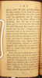 View image of 26and in which she took peculiar pleasure: she had a nosegay in her hand for each of her girls—and Rosalie was once received under that appellation—and she beckoned to them as she saw them walking in the shrubbery, and, with one of her pensive smiles, gave to every one her little present. The Abbé Hayward, that excellent and venerable man, met her: benignity and pious resignation were in his countenance, as he endeavoured to find some conversation that might cheer the depressed spirits of Mrs. Vyvian. She bade her daughters and Rosalie walk before them; and, making a short tour of the plantations, seemed to remove her languor, and enable her to meet her family at supper with some appearance of cheerfulness. Such were the scenes Rosalie was recalling to her mind, and such the figures with which memory was busy in peopling them, when her contemplations were disturbed by figures very different, who presented themselves under all the disadvantages of contrast....Blagham, and two other young men whom she did not recollect ever to have
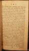 View image of 27seen before, came whooping and hallooing from the house, and ascended the hill towards her; as it soon became very steep, Blagham leaped from his horse and ran towards her, and the other two followed him. "Why, my sweet Rose,(cried he), my Rose of the world! why do you cruelly hide yourself among thorns? Only to be looked after—eh! my pretty Rose,—Aye, 'tis the way of you all:——there's my Kate below yonder, would fain serve me the same sauce—but I'm come to drink tea with you, my dear little sister, that is to be, and to introduce two of my friends to you. (The friends by this time were come to the spot). This, Madam, is Captain Mildred of the 69th, now quartered in our town; and this, (added he, with all solemnity), this is the Rev. Philibert Hughson, a worthy clergyman, and Rector of Higgington cum Sillingbourn in this county." Rosalie had nothing to do but to curtsey to them both: her future brother-in-law, however, had not yet done with her; but, stepping back, he made a ridiculous bow, and, in a theatrical tone, exclaimed, "And now, gentlemen, give me the superlative
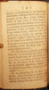 View image of 28pleasure of introducing to your admiration Miss Rosalie Lessington, fourth and youngest daughter of the Rev. Joseph Lessington, Master of Arts, Vicar of Cold Hampton, and Curate of Barlton Brooks in this county: a young lady, of whose personal perfections, gentlemen, I dare not speak; but who is, I may venture to say, endowed with every qualification to render the marriage state completely happy."—Shocked and amazed at this impertinent address, Rosalie felt her cheeks glow with anger and indignation, but, recovering herself, she asked coldly if her mother had sent for her? "She has—she has—(cried her persecutor, whom she now perceived had added to his natural impertinence all that which liquor gives when it overflows the shallow brain)—She has, fair flower of the desart, and we are the beatified ambassadors charged with the delectable commission. Come then, bright nymph!"—— He was proceeding in this style, when Rosalie, taking from him the hand he would forcibly have held, said, "I wish my mother had sent some person who was more in pos-
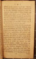 View image of 29session of his reason."——"Ah! Madam, (cried the young man, who was announced as the Rev. Philibert Hughson), there are moments when reason is lost in wonder and delight, and when"——"What, Sir?" interrupted Rosalie, in a tone so unexpected, that the young divine was unable to proceed, and even blushed as he attempted to finish a speech which he probably thought was in the style of the society he was with. As they walked down the hill towards the house she turned to Captain Mildred, who, as he had hitherto been silent, had not offended her; and who, being an officer, she hoped was a gentleman, and entered with him into the common conversation, while Blagham, too drunk to make much speed, staggered after them, and Mr. Hughson went sidling down a little before her, as if still solicitous to attract her notice, yet half afraid of another rebuff, was trying to recall his consciousness of self-importance.—The Rev. Philibert Hughson was what is called a dapper, tight-made, little man: his face neither well nor ill, but with something in the expression of it that soon let an ob-
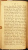 View image of 30 server of faces into his character. If the Rev. Philibert Hughson had even ventured to think, in the same unrestrained manner in which he sometimes spoke, it is very certain that he thought himself a d——d clever fellow. The second son of a very rich father, he had been a buck of the first head at Cambridge, spent four times as much as he was allowed, and contrived to get some thousands in debt. He was an excellent judge of horse flesh, and a great connoisseur in carriages: he knew the dimensions and properties of every vehicle from a phaeton to a sulky; had possessed them all by turns, and had changed them oftener than his cloaths or his friends. He had made a merit of taking orders, when he knew his careful father had bought the valuable livings of Higginston cum Sillingbourn, worth together above eight hundred a year. Nor did he determine to make this sacrifice, and, from the smartest fellow at Cambridge, sink into a country parson, till he had stipulated for the payment of his debts, and a handsome sum in ready money. He then cut off his hair, turned his green coat into a gray one, and
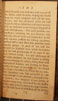 View image of 31 resolved to be very orthodox and very good: his father, most devoutly hoping he would keep his word, complied with all his conditions, and was delighted when he had sworn he felt an irresistible call from heaven, and was inducted to the living of Higginston cum Sillingbourn. The most pleasant circumstance attending his new situation was, that this cure of souls was undertaken in the best country possible for killing pheasants, and not half a mile from him partrides were equally plenty. A pack of the best fox hounds in England were within five miles, and he had greyhounds of his own of the true Orford breed. To take advantage of all these pleasures, he had begun by fitting up and enlarging the stables, filling them with high-prized hunters, and sending to Newmarket for boys to attend them: he stored his cellars—furnished his house for his brother sportsmen who had promised to visit him—bought a new phaeton; changed it for a curricle; then imagined a new whisky of his own composing, calculated for the Suffex roads; and, in short, during the eight months that he had been in possession of the living,
) View image of 32 View image of 32had felt so many irresistible impulses, besides that which had given so valuable a member to the church, that he had already received from the friendship of his dear friend Blagham a trifling accommodation of 'the needful'—for to apply to the old gentleman so soon was hardly discreet; parental patience, like some other virtues, being sometimes apt to wear out, if too frequently called into use. Mr. Blagham had not been many days introduced to the Rev. Philibert Hughson, before he discovered that something very advantageous might arise from cultivating his acquaintance. He perfectly understood the way to recommend himself, and set about it with so much zeal, that he became very soon the dearest friend he had in the world......Blagham thought he could not do better than endeavour to recommend one of the sisters of his intended wife, and he had already tried to persuade his friend that he was in love with Maria, in which he would probably have succeeded, if, at a convivial meeting where the beauty of the neighbouring damsels was canvassed, some young man, who had accidentally seen Rosalie, had not warmly
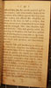 View image of 33assured him, that she was the prettiest girl in the county; and when another spoke of the celebrity of her sisters, agreed that they were fine women, but assured Mr. Hughson, to whom he sat near, in half a whisper, that there was no more comparison between light and darkness. This had greatly raised the curiosity of Hughson, who had since pressed his friend Blagham to carry him to the house of his intended father-in-law; a request which was heard with pleasure, and immediately granted. Equally rash and headstrong in whatever he undertook, Hughson was passionately in love at first sight, and as immediately determined to pursue the object that had thus struck him, nothing doubting her ready and even joyful acceptance of a man so unexceptionable in point of fortune, and so very clever a fellow. Under this impression he took no pains to conceal his admiration, but persecuted the distressed and reluctant Rosalie with speeches to which it was impossible for her to reply. She looked timidly towards her father for protection, but she saw, that
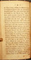 View image of 34 far from being willing to afford it to her, he seemed delighted with the attention Mr. Hughson paid her, and smiled and rubbed his hands, as who should say, "Oh! oh! here comes another chapman for another of my girls."—Mrs. Lessington appeared to be impressed with the same idea, and overwhelmed the little man with civility, while Maria, to whom he had before shown a great preference, and who seemed to have been much better pleased with it, was piqued at his now addressing himself entirely to her sister, and showed that she severely felt the mortification, but endeavoured to conceal her vexation, by laughing and talking with Captain Mildred, who, being one of those military heroes whose talents are greater in the field than in the cabinet, she found it rather difficult to keep up the gaiety she affected; for Captain Mildred, besides that his head was very scantily stocked with ideas, was too fine a man to give himself the trouble to produce the few he had to amuse a country parson's daughter. He only came with Blagham and Hughson because he had nothing better to do with himself, and had
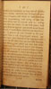 View image of 35 besides an inclination to buy one of Hughson's horses, which he was in hopes of getting a bargain, and which he had therefore been depreciating, and trying to put the little divine out of conceit with it; telling him that the horse, in the first place, had been strained behind, and would never stand sound; "And besides, (said he), my dear Doctor, it grieves all your friends to see you upon such a tall, long-legged animal. By Heavens! Jack Norton of our regiment called to me the other day, as you rode through East Street, and asked me who that little fellow upon the tall horse was? 'For damme, (says he), he puts me in mind of Tom Thumb upon an elephant."—Such was Captain Mildred, on whom neither beauty nor wit could make the slightest impression, and who, equally stupid and selfish, had every qualification for a rogue, except talents. But he had a tolerable person, a red coat, and was said to be a man of fortune; so that he had been reckoned among the misses a very charming man, and their mamas had invited him to their concerts and their card parties.
) View image of 36 View image of 36Before the tea was finished, at which Rosalie so reluctantly assisted, Mr. Hughson received from both her father and mother the most pressing invitation to renew his visits as often as he could. "And I hope, my good Sir, (cried Mr. Lessington), I hope you will not let the beginning of the shooting season deprive us of the happiness of seeing you, for, I assure you, we shall have excellent sport round about this village. I myself know of a great number of birds: I expect my son too; my eldest son, will be here shortly, and I am sure he will be greatly flattered by the honour of your acquaintance." "I am sure he will not, (sighed Rosalie to herself); for never can a man be imagined whom William would like so little: but, alas! my father knows he is not coming." Plans were now talked of for the next week, which Hughson spoke of as dedicated to the gun, with childish eagerness. He gave to Mr. Lessington a very long and elaborate description of a new gun he had bought, which had cost him five and twenty guineas:
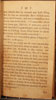 View image of 37not indeed that he wanted any such thing, for he was an admirable shot—killed nineteen out of twenty, and was reckoned as sure as any man in Norfolk. "I remember about two years ago, (said he), I went out, only I and my father's gamekeeper, and we killed, that is, I killed, about forty brace in about five hours, for he hardly ever fired." "Birds were remarkably plenty I suppose," said Mr. Lessington. "Why no, really not so very remarkably plenty—I have seen them as much so: but, my dear Sir, Norfolk is the county for game....why, I have seen, Sir, of a morning, when the birds were at feed, the very ground covered with them, so that you could not have thrown a pebble without touching them—as close, Sir—as close."—— Lessington, who by a glance from Rosalie's eye, saw that Hughson was doing himself disservice with her by this sort of rhodomontading, saved him the trouble of finding the comparison he was seeking for, by saying, "Yes, yes——I have been in Norfolk——I know there is a prodigious quantity of game in that county."
) View image of 38 View image of 38 But Hughson, elevated with wine and inspired by love, could no longer check the violent inclination he always felt to relate some very marvellous story; and to make himself the hero of it, he thought it was impossible to find any audience better disposed to listen and believe, with the exception only of Captain Mildred, whose coldness he imputed to envy. He began, therefore, and told some of the most extraordinary adventures that ever were heard:—how he once, with his single arm, defended several officers of dragoons from the insults of an enraged populace, whom some of them had offended, just for throwing an old woman over a bridge into the river in a frolic...."The old woman, (said he), swam like a cork, and was taken out not a bit the worse. My friend, Ned Whatley, as honest a fellow as ever lived, gave her a crown, and bid her not make such a d——d yelling, since there was no harm done; but there came up a parcel of fishwoman and washwoman, and the devil knows who, and presently all the town, tag rag and bob tail, were under arms, and my friends were forced to retreat to the Red
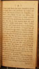 View image of 39Lion, and there they shut themselves up in a room, Sir——so, presently up comes the mob, and begins to batter the door, Sir....Oh! oh!—thinks I—are you there, my good friends? I shall have a little conversation with you, gentlemen, in a minute....So, Sir, out I went among them all, and began to reason with them. The hissed, however, and began to be very troublesome, but that I did not mind: I seized one of the foremost by the collar; damme—(says I. I was not in the orders then you know)—Damme—(says I)—I'll make an example of some of you. So, Sir, up comes a fellow, six feet high, and as strong as Sampson; but I seized him with the other hand, and was going to drag both him and the first rascal into the room, when up comes a great strapping wench with a red hot poker in her hand; she gave me a blow, Sir, upon my head, which cut through a thick hunting hat, Sir, and stunned me sure enough." "And pray, Hughson, (said the Captain, with an air of incredulity), what were your friends the officers of horse doing all this while?"——"Doing?"—(answered he)——
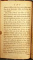 View image of 40Doing?—Why—why they were—they were shut up in the room; what could they do, you know." The evident fallacy and folly of such a story would not have been tolerated in any other company; but Mildred was too heavy and too indolent to confute or ridicule it; and the rest were the very humble servants of the relator, except Rosalie, who, disgusted more and more every word he spoke, was extremely glad to be relieved from hearing either his compliments or his stories; when it was proposed they should all take a walk to the top of the hill, and that the gentlemen should walk thither with them, and have their horses led. In the bustle of their departure, Rosalie left the room as if to get her hat; but having done so, she glided away, and passing as quickly as she could through a small orchard that lay on the other side of the house, she went into a copse that adjoined to it, and was presently out of hearing the inquiries that she supposed would be made for her. Perhaps her father and mother might chide her on her return to the house; but she had so invincible a dislike to
) View image of 41 View image of 41 being exposed to the impertinence of Blagham, or the ridiculous speeches of his new friend, that there was nothing she had not rather submit to that temporary ill-humour could inflict, than to be exposed to such teasing and disgusting conversation.
|
){kind=link}
){kind=link}
){kind=link}
){kind=link}
){kind=link}
){kind=link}
){kind=link}
){kind=link}
){kind=link}
){kind=link}
){kind=link}
){kind=link}